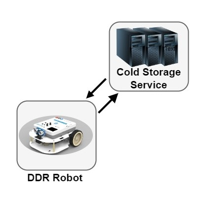

Introduction
Lo Sprint1 si impegna ad analizzare il core business identificato dallo Sprint0, ovvero la gestione del trasporto dei carichi dalla INDOOR alla PORT.A tal fine i macro-componenti ColdStorageService e Transport Trolley vanno approfonditi identificando punti critici e valutando i costi di eventuali soluzioni.
Requirements
Descrizione del
TemaFinale23
Goals dello sprint 1 :
- Identificare ed analizzare tutti i problemi relativi ai requisiti che coinvolgono ColdStorageService e Transport Trolley
- Formulare un modello di interazione dei componenti individuati e quindi fornire un'architettura logica
- Realizzare un simulatore(O MOCK?) della ServiceAccessGUI
- Pianificazione del lavoro
- Realizzare i componenti software ColdStorageService e Transport Trolley
- Testare i componenti software realizzati
- Sviluppare un prototipo su base non distribuita
Requirement analysis
Chiarimenti del committente
L'interazione con il committente ha permesso di chiarire alcuni aspetti del progetto:- Qualora un Fridge Truck chieda di scaricare un carico superiore alla portata massima
del Transport Trolley per il momento si adotta la politica di rifiutare a priori tale richiesta.
Il committente però richiede una analisi dei costi che comporterebbero accettando carichi che superano il peso del Transport Trolley obbligandolo così ad effettuare più giri per soddisfare la medesima richiesta - Quando il Transport Trolley ha completato tutte le richieste al momento presenti nel sistema torna alla HOME. Se durante il tragitto dalla ColdRoom alla HOME si presenta una nuova richiesta di carico/scarico il Transport Trolley deve avere l'accortezza di direzionarsi direttamente alla INDOOR, senza quindi passare prima dalla HOME.
- Il Transport Trolley per raggiungere una determinata posizione della Service Area non deve per forza percorrere sempre la strada ottimale, ma ma non dovrebbe nemmeno fare giri particolarmente inefficienti. Quindi come conclusione vi è un minimo di tolleranza nei suoi spostamenti.
Da chiarire con il committente
Dizionario
NOMI:
| Termini | Descrizioni |
|---|---|
| ColdStorageService | Il ColdStorageService è un Sistema Distribuito e corrisponde all'entità del sistema che coordina il comportamento degli altri componenti implementando la business-logic dell'applicazione. Definisce il prodotto finale che soddisfa tutti i requisiti forniti dal committente. |
| Service area | Superficie piatta, rettangolare, con ostacoli fissi e circoscritta da 4 pareti. Definisce la
zona di manovra del Transport Trolley ed è inoltre composta da:
|
| Ostacolo | Un ostacolo è un oggetto che limita l'area percorribile dal Transport Trolley |
| INDOOR | Posizione identificata su una parete della Service Area adibita allo scambio di alimenti dal Fridge Truck al Transport Trolley. |
| PORT | Posizione della Service Area identificata su una faccia della ColdRoom utilizzata per scaricare gli alimenti dal Transport Trolley. |
| HOME | Posizione identificata sul pavimento della Service Area che identifica la zona dove il robot risiede alla partenza o in attesa di nuove richieste. |
| Transport Trolley | Un robot virtuale a forma di quadrato, con lato di lunghezza RD, che è inizialmente posizionato nella sua posizione HOME e svolge un'azione di deposito. Può muoversi in avanti, indietro, fermarsi e ruotare di 90°. Il Transport Trolley è un attuatore di comando: può utilizzare il robot DDR per eseguire azioni in un ambiente reale. |
| RD | Lunghezza di ogni lato del Transport Trolley. |
| Alimenti | Contenuto del carico che il Transport Trolley gestisce. |
| ColdRoom | Una stanza o un ambiente appositamente progettato e controllato termicamente per conservare e mantenere la temperatura dei prodotti alimentari a bassa temperatura. Costituisce la destinazione del materiale ritirato dal Transport Trolley al punto di INDOOR. |
| MAXW | Quantità massima di alimenti espressa in Kg che la Cold Room è in grado di immagazzinare. |
| DDR robot | Differential Drive Robot (DDR), robot fisico fornito dal committente. È in grado di muoversi all'interno della Service Area grazie al software BasicRobot, anch'esso fornito dal committente. |
| Azione di deposito | Sequenza di azioni del Transport Trolley che vengono eseguite ogni volta che un Fridge
Truck è
pronto per scaricare il carico:
|
| FW | Peso del carico espresso in Kg. |
| Carico | Quantità in kg di alimenti che viene depositato dal Fridge Truck presso l'INDOOR. |
| ServiceAccessGUI | Interfaccia grafica utilizzata dai conducenti del Fridge Truck per interagire con il ColdStorageService al fine di scaricare il carico. |
| Ticket | Identificatore univoco della richiesta del conducente del Fridge Truck al ColdStorageService per consentire lo scarico del carico. |
| TICKETTIME | Tempo di validità del Ticket, espresso in secondi. |
| Stato della Service Area | Informazioni sul sistema ad un preciso istante di tempo, che includono:
|
| Stato del Transport Trolley | Informazione riguardante l'azione svolta dal Transport Trolley, visibile anche grazie al
Led. Può essere:
|
| DLIMT | Distanza limite misurata dal Sonar. È usata per fermare il Transport Trolley. |
| MINT | Tempo espresso in millisecondi che identifica l'intervallo minimo che può intercorrere tra due stop consecutivi del Transport Trolley. |
VERBI:
| Soggetto | Termine | Descrizione |
|---|---|---|
| Transport Trolley | Essere pronto | Il Transport Trolley è in condizioni di servire una nuova operazione di scarico. |
| Essere in movimento | Il Transport Trolley si sta muovendo all'interno della Service Area, si considera in movimento anche quando è fermo ma sta svolgendo una azione. Durante questa fase devono essere soddisfatti gli Alarm requirements. | |
| Terminare l'azione di scarico | Il Transport Trolley ha completato una azione di scarico ed è pronto per gestire una nuova richiesta se presente, altrimenti ritorna in HOME. | |
| Raccogliere il carico | Il Transport Trolley si trova in INDOOR e prende il carico impiegandoci il tempo necessario ed avendo cura di non superare la sua capacità massima di trasporto. | |
| Depositare il carico | Il Transport Trolley si trova in PORT della Cold Room e scarica il carico impiegandoci il tempo necessario. | |
| Fare un'azione di carico-scarico | Il task effettuato dal Transport Trolley consiste di 3 azioni:
|
|
| ColdStorageService | Avviare il sistema | Viene avviato il software del sistema ed il Transport Trolley risulta posizionato in HOME. |
| Inviare una risposta di storage | Azione che si verifica quando il sistema riceve una richiesta di storage. Il
ColdStorageService
risponde con una risposta che può essere:
|
|
| Invio charge taken | Il sistema comunica al conducente del Fridge Truck che il carico è stato correttamente ritirato. | |
| ServiceAccessGUI | Inviare una richiesta di storage | Il conducente del Fridge Truck si avvicina all'area INDOOR del servizio e chiede al sistema ColdStorageService (tramite un dispositivo intelligente) se può depositare un carico di FW kg. |
| Inviare il Ticket | Il conducente del Fridge Truck invia il proprio Ticket al sistema. |
Service Area
Data la descrizione della stanza e l'immagine fornita dal committente, si è deciso di modellare la Service Area come un rettangolo, circoscritto da 4 mura, contentente due ostacoli fissi di cui uno è la Cold Room.
Sistema
Dall'analisi fatta nello Sprint0 ci possiamo soffermare sui seguenti componenti:- DDR Robot
- ColdStorageService

Analisi del Problema
Esplorando il core-business si possono delineare 2 principali problematiche con le annesse considerazioni ed osservazioni:- Gestione del movimento per effettuare il carico/scarico da parte del Transport Trolley
- Il committente ci mette a disposizione già il BasicRobot23 che permette astrarre la gestione del DDR-robot,
presentanodosi come componente componente software che esegue comandi di spostamento di un DDR-robot in 'modo indipendente dalla tecnologia' con cui è
realizzato del robot (virtuale o reale).
Questo componente ci torna molto utile perché ci permette di comandare il robot tramite coordinate, un comando evoluto rispetto ai classici comandi come: vai avanti, vai indietro, gira a destra di 90° e gira a sinistra di 90°(qui la raccolta di tutti i comandi utilizzabili sul BasicRobot23)
- Il BasicRobot23 ci obbliga a descrivere la Service Area come una griglia di coordinate, il che però non rappresenta alcun problema perché
è compatibile con il nostro progetto. Infatti in seguito si riporta l'immagine descrittiva della Service Area adottando una griglia numerata avente
origine nell'angolo in alto a sinistra, scelto per comodità in quanto coincide con la HOME, e lato di ogni cella pari alla dimensione RD del Transport Trolley:

file:///C:/Users/kossk/OneDrive/Documents/GitHub/issLab23/iss23Material/html/BasicRobot23.html#uso-del-planner Siccome la mappa del nostro progetto coincide con quella de BasicRobot23(link) la mappatura della stanza xxxxxxxxxxxxxxxxxxxxxxxxxxxxxxxxxxxxxxxxxxxxxxxxxxxx - Gestione dei meccanismi di gestione delle richieste in arrivo
Considerazioni
- In fase di analisi si è affrontata la problematica relativa alla concomitanza di richieste da parte di Fridge Truck diversi, e in particolare quale dovesse essere la policy riguardo all'inserimento di Ticket mentre il TransportTrolley sta processando una richiesta. Si è deciso di non permettere a molteplici Truck di inserire il proprio Ticket e poi mettersi "in coda" in attesa del proprio turno. Quando un Fridge Truck inserisce il proprio Ticket, nel caso il servizio dia conferma di validità, viene chiesto al TransportTrolley di recarsi presso la zona carico. In questo caso diciamo che il Ticket è in attesa (Waiting). Quando il Trolley da conferma di Charge Taken e si dirige verso la ColdRoom, il Ticket viene segnato come in lavorazione (Working) e il Fridge Truck è libero di abbandonare la zona INDOOR. In questo momento un'altra richiesta di inserimento Ticket può essere gestita dal sistema. Questo nuovo Ticket rimarrà in stato Waiting fino a che il TransportTrolley non avrà depositato il carico corrente e richiesto al servizio se è presente un nuovo Ticket.
-
Dato il tempo materiale di spostamento del carico da INDOOR a ColdRoom dovuto al movimento del
TransportTrolley, e il grado di variabilità nel tempo tra richiesta di storage e inserimento del
Ticket da parte
dei Fridge Truck, serve una strategia per l'aggiornamento della capacità della ColdRoom stessa.
In particolare, decidiamo di considerare ogni richiesta di Storage non ancora completamente
soddisfatta come una prenotazione di una certa quantità di peso (pari a FW) nel frigo.
Nel caso in cui una richiesta arrivi quando la ColdRoom è teoricamente piena (ovvero considerando
anche i carichi prenotati), il servizio ha premura di controllare eventuali Ticket scaduti, e
conseguentemente
liberare lo spazio allocato. Qualora non siano presenti Ticket scaduti, la richiesta verrà
respinta. Ciò potrà portare in alcuni casi il servizio a respingere carichi che in breve tempo si
sarebbero rivelati accettabili, ma grazie a questo sistema di allocazione logica del peso
siamo sicuri di non mandare mai il servizio in stato di overbooking e conseguente overflow della
ColdRoom.
Solo quando il TransportTrolley avrà comunicato di aver depositato nella ColdRoom il carico che attualmente sta gestendo verrà aggiornato il peso del contenuto reale del frigo e di conseguenza ridotto quello prenotato. -
Per questo primo Sprint segliamo di modellare i Ticket come sequenza di numeri corrispondenti al
timestamp di richiesta dello stesso. In questo modo otteniamo leggibilità, univocità e
semplicità.
Questa scelta in ultima istanza dovrà essere confermata dal Committente.
Codice QAK per la modellazione del sistema: ColdStorageService.qak
Architettura logica
Il sistema da noi modellato, presenta la seguente architettura logica:
Test plans
I test prevedono che il sistema riceva diverse richieste dal conducente del Fridge Truck tramite la ServiceAccessGUI. I tests mirano a mostrare e verificare come il sistema reagisce quando riceve le richieste di store in diverse situazioni:- Store request con Cold Room piena -> StoreRejected
- Store request con Cold Room non piena -> StoreAccepted
- Invio Ticket inesistente -> TicketNotOK
- Invio Ticket con TICKETTIME scaduto -> TicketNotOK
- Invio Ticket con TICKETTIME non scaduto -> TicketOK
By
Tassinari Gabriele, email: gabriele.tassinari2@studio.unibo.it ,
Baraldi Leonardo, email: leonardo.baraldi@studio.unibo.it ,
Koss Krystian, email: krystian.koss@studio.unibo.it


GIT repo: https://github.com/4utotune/ColdStorageService/
Tassinari Gabriele, email: gabriele.tassinari2@studio.unibo.it ,
Baraldi Leonardo, email: leonardo.baraldi@studio.unibo.it ,
Koss Krystian, email: krystian.koss@studio.unibo.it
GIT repo: https://github.com/4utotune/ColdStorageService/